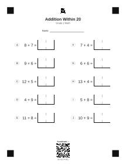
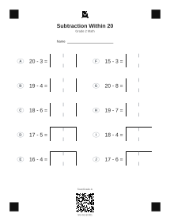
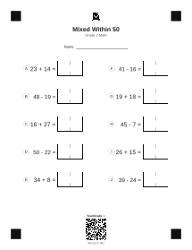

Open-Divider Worksheet Test Set
These three printables use the #5 open-divider answer box. Everything else is intentionally held steady so scans compare against the current production worksheet geometry.
Open print packet PDF
